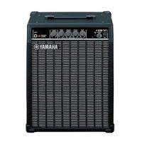
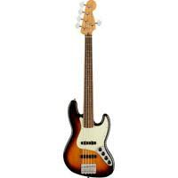
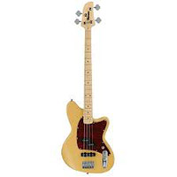
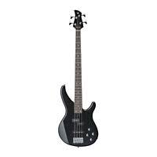
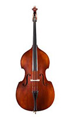

Fender Bass Amp - 20B
$950.00
| Brand | Fender |
| Number of Inputs | 1: Normal |
| Colour | Black |
| Condition | Brand New |
| Outputs | None |
| Volume and Tone Controls | 1x Master Volume, Bass, Treble, Gain |
| Description | The Fender 20B is a perfect amp for beginners on the bass with the simple volume controls that allow you to play wherever you go thanks to the small size. It also has 1 8" horn speaker in the middle which allows you to turn up the sound to a really high level. |
| Includes | Amplifier, Power Cord, Guitar Lead |
| Rating | 90 |

"Fender Player Jazz V Electric Bass Guitar, Pau Ferro, 3-color Sunburst
$1,500
| Class of Bass | Bass Guitars |
| Number of Strings | 5 Strings |
| Colour | 3 Colour Tobacco Sunburst |
| Condition | Brand New |
| Outputs | 1x Guitar Jack Output |
| Volume and Tone Controls | 1x Volume (Middle Pickup), Volume (Bridge Pickup), Master Tone |
| Description | With its dual single-coil pickups and smooth playing feel, the Player Jazz Bass V is an inspiring instrument with classic, elevated style and authentic Fender bass tone. It's powerful, rumbling sound is punchy and tight; a growling voice that's matched with fast, smooth playing feel for a shot of creative inspiration. Ready for action in the studio or on the stage, the Player Jazz Bass V can take anything you can think of-and everything you haven't yet. Respecting our heritage while maintaining our innovative spirit, the two growling Player Series single-coil pickups are packed with legendary Fender bass tone, turned up to 11 for modern ears. |
| Includes | Bass Guitar and Strap |
| Rating | 95 |

Ibanez Talman Bass Standard Electric Bass Guitar, Maple Fretboard, Mustard Yellow Flat
$1,000
| Class of Bass | Bass Guitars |
| Number of Strings | 4 Strings |
| Colour | Mustard Yellow Flat and Maple |
| Condition | Brand New |
| Outputs | 1x Guitar Jack Output |
| Volume and Tone Controls | 1x Trebleboost/cut-control, Bassboost/cut-control |
| Description | The Perfect beginner bass, the Ibanez Talman Bass is a mustard yellow color and has two control knobs for treble boost and bass boost. This is the simple 4 string bass which is excellent for learners when learning about music theory, performance and group work. 9V battery is located in the back of the bass to help activate the EQ controls. This bass can go into the extreme frequencys so you can get the aquired sound over a variety of genres. Is a bass which is not to heavy and is perfect for playing at small time gigs. |
| Includes | Bass Guitar and Strap |
| Rating | 85 |

Yamaha TRBX174 4-String Electric Bass Guitar
$1,800
| Class of Bass | Bass Guitars |
| Number of Strings | 4 Strings |
| Colour | Black and Maple |
| Condition | Brand New |
| Outputs | 1x Guitar Jack Output |
| Volume and Tone Controls | 1x Volume, Master Tone |
| Description | The Yamaha TRBX174 electric bass is the latest addition to the Yamaha TRB series of electric basses. Quality materials combined with modern manufacturing techniques produce an affordable and very playable electric bass that surpasses anything in its class. Its the perfect bass for those which have advanced through the levels from intermidate stages to advanced stages. Perfect for those who wish to go around to different competitions or gigs. Has the traditional set up of volume and tone and has a glossy black color. |
| Includes | Bass Guitar and Strap |
| Rating | 97 |

Andreas Eastman VB105
$1,800
| Class of Bass | Double Bass |
| Number of Strings | 4 Strings |
| Colour | Spruce Varnish and Ebony |
| Condition | Brand New |
| Outputs | None |
| Size | Full Size Double Bass (4/4) |
| Description | Andreas Eastman Model 105 basses are a great balance of superior tone and stability. With a fully carved top and back and laminated ribs, Model 105 basses have a rich and powerful sound with enhanced stability. Each bass is finished with a hand-applied, shaded, antique-style varnish. These basses are great for touring musicians and school environments. |
| Includes | Double Bass, Bow, and Rosin |
| Rating | 99 |